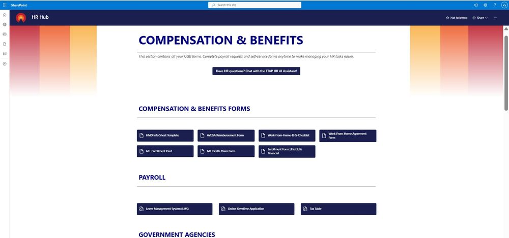
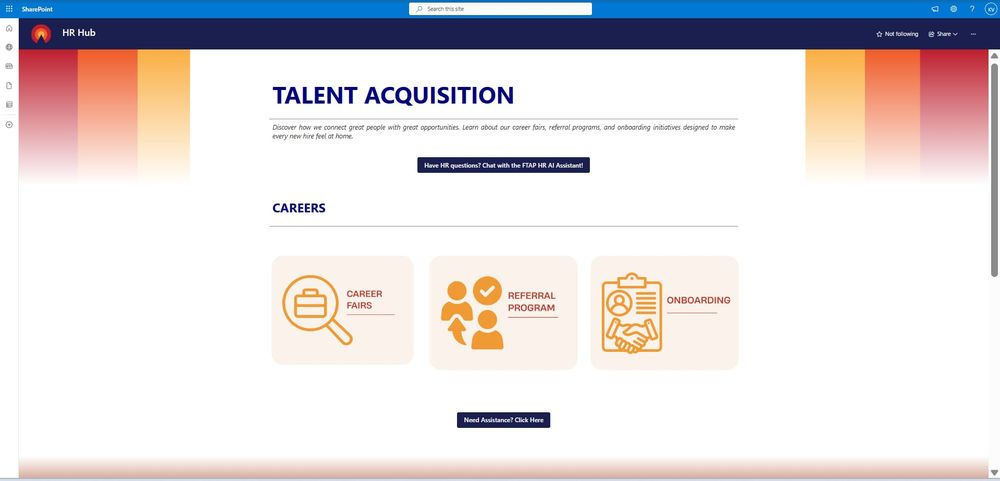
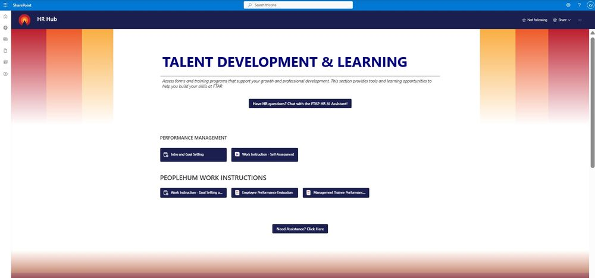
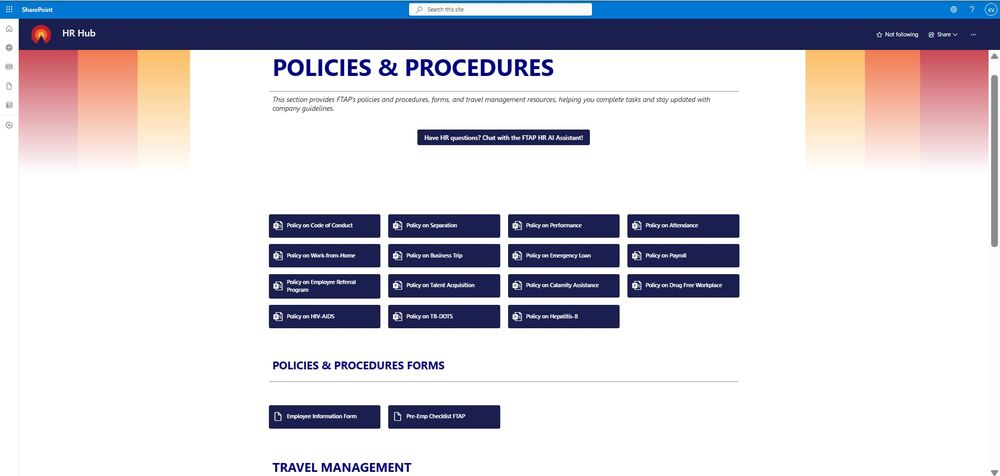

Frontier Tower Associates Philippines Inc. · Aug 2025 to Oct 2025
Context
During my internship, I was asked to solve an open problem for the HR department: there was no central place for employees to find HR forms, policies, or self-service resources, and no existing system or template to build from. I was given ownership of the project from planning through launch, working independently to design and build the solution on Microsoft SharePoint.
Result
300+
Daily active users sustained
300+
Personnel files digitized to e-201
9
HR functions consolidated into one hub
What I Built
- Designed the full site architecture and navigation for HR Hub, organizing Talent Acquisition, Compensation & Benefits, Talent Development, Employee Relations, Policies & Procedures, and Admin into a single self-service portal
- Built and published all HR forms, policy documents, and process pages, replacing scattered manual requests with one searchable source of truth
- Led a team of co-interns in auditing and digitizing over 300 employee 201 personnel files into secure e-201 digital records
- Provided ongoing day-to-day IT support for the HR department as the system's primary point of contact
The Portal

HR Hub homepage, the single entry point to every HR function

Compensation & Benefits, self-service forms and payroll tools

Policies & Procedures, company-wide policy library

Talent Development & Learning, performance and training resources

Talent Acquisition, careers, referrals, and onboarding
Skills Demonstrated
SharePoint Site Design
Information Architecture
Permissions & Access Management
Change Management
Stakeholder Support
IT Support
Independent Project Ownership